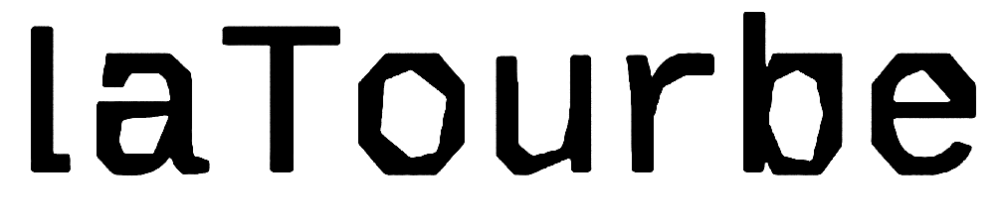

La Tourbe est un fanzine caractérisé par l'accumulation progressive de feuillets A5, un support remarquable par sa très forte teneur en description d'expériences physiques décomposées, peu, ou pas décomposées, d'origines graphiques variées.